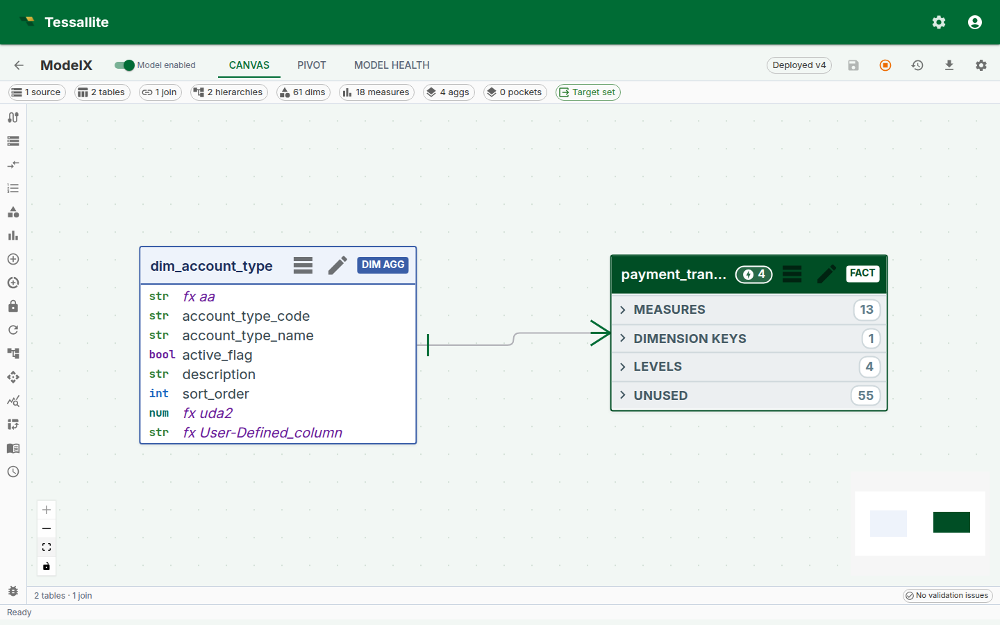
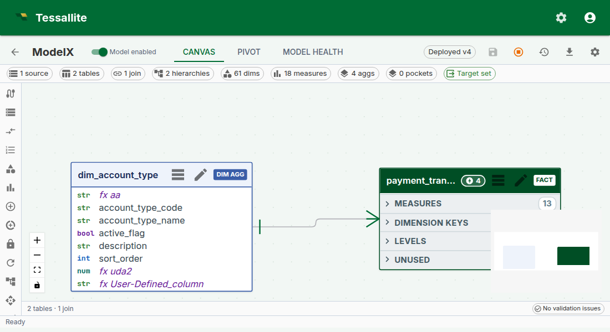
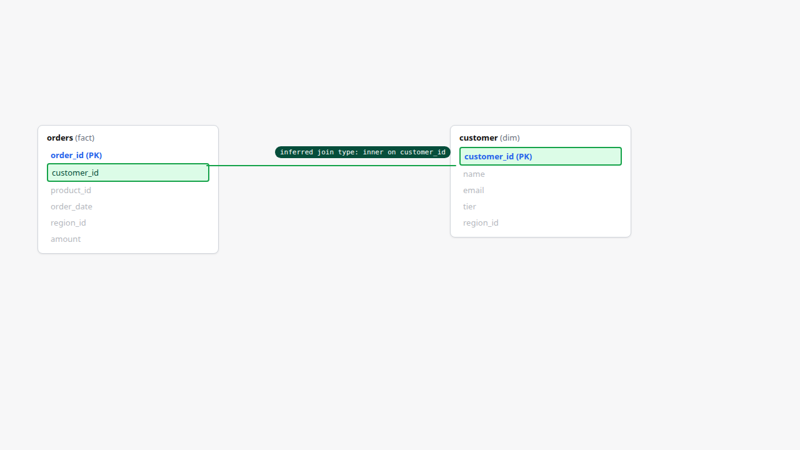
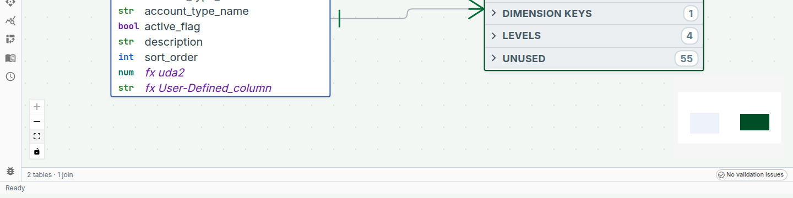
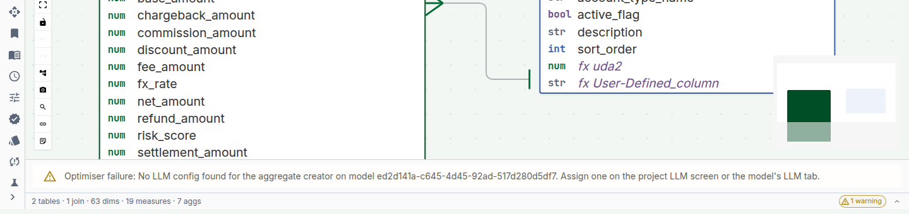

Model Canvas Tour
Why the canvas matters
A semantic model is a graph. It has fact tables, dimension tables, joins between them, hierarchies inside the dimensions, and performance artefacts (aggregates, pockets) attached to the facts. Every popular BI tool represents this graph as a list of clickable things in a left sidebar — which works for a five-table model and falls apart at fifty tables.
The Model Canvas is Tessallite's answer: a single graph view that shows the model as it actually is. A fact at the centre, dimensions around it, joins as labelled lines, overlays showing which facts have aggregates or pockets, hierarchies rendered inline on dimension nodes, a minimap for large models, and a status bar for "is anything broken right now". It is the default view on Model Builder — before a modeller defines a dimension or a measure, they see the model.
Phase 6.A pushed the canvas from a read-only diagram into a working authoring surface. This page walks through every surface element and the gestures that ship with it: fact-node column segmentation, minimap navigation, hierarchy overlays, aggregate and pocket chips, drag-to-join v2, and the model-health status bar.

Figure 1 — The canvas as a single frame. Everything the modeller needs to orient themselves in an unfamiliar model is on this one surface. Full description: canvas-overview.txt.
The fact node
A fact node is a rectangle with three horizontal column segments:
- Measures (blue strip). Every measure the model defines over this fact. This is what a BI tool would call "the numbers".
- Dimensions in use (green strip). Every column on the fact that participates in a join to a dimension table. This is what a BI tool would call "the slicers".
- Unused (grey strip, collapsed by default). Every other column on the fact — internal IDs, audit timestamps, source-system scaffolding. Collapsed because they are rarely interesting, but available at one click when they are.
The three-segment split is not cosmetic. It encodes a decision: when a modeller opens an unfamiliar model, the first three questions they ask are "what does this fact measure?", "what can I slice it by?", and "is there anything else in it?". The canvas puts each answer on its own strip.
Column cells are interactive. Click a column in the Dimensions strip to open the join it participates in. Click a column in the Measures strip to open the measure's form. Click a column in the Unused strip to optionally promote it (to a new measure, a new dimension, or to hide it permanently from the view).
Dimension nodes and hierarchies
Dimension nodes are smaller rectangles rendered around the fact. Each shows the dimension's columns in a single list (no three-segment split — dimensions are simpler).
Dimension nodes that participate in a hierarchy render the hierarchy inline as a chain of connected pills above the column list — year → quarter → month → day for a date dimension, country → region → city for a geography. The chain shows the distinct-value count on each level so a modeller can see at a glance whether the hierarchy has the fanout they expect (5 years, 20 quarters, 60 months — or is one of those unexpected?).

Figure 2 — The hierarchy overlay on a date dimension. Explicit, visible, queryable — not hidden metadata. Full description: canvas-hierarchy-overlay.txt.
Why render the hierarchy on the node. Hierarchies are the single most common source of "why is my drill-down not working" in BI tools. Most tools hide the hierarchy in a settings panel three clicks deep. Putting it on the node means "does this dimension have a drill-down path?" is answerable by looking, not clicking.
Click any pill to open the hierarchy editor. Click-to-drill in the pivot surface walks this same chain.
Joins — the labelled lines
Joins between fact and dimension nodes are rendered as labelled lines. The label reads fact.column = dimension.column. The line's thickness hints at join cardinality (thicker for fan-in; thinner for many-to-many).
Double-click a line to open the join drawer. Right-click to disable, inspect, or delete.
Drag-to-Join v2
A new join is authored by dragging from a column cell on one node to a column cell on another:
- Click-and-hold on a fact-node column (e.g.
orders.customer_id). - Drag toward the target dimension node. As you cross the boundary, every non-matching column on the target is dimmed; matching columns (by name and type) get a green acceptance ring.
- Release on the target column. Tessallite infers the join cardinality (usually
many_to_onefor fact-to-dimension) and opens the join drawer pre-filled so the modeller can confirm or adjust.

Figure 3 — Drag-to-Join v2. Joins are authored from data, not from a dropdown. Full description: canvas-drag-to-join.txt.
The v2 gesture replaces the earlier right-click → "New join" → two-dropdown flow. It is optimised for the common case (fact-to-dimension by shared column name) and falls back cleanly to the manual path for the uncommon (different column names on each side).
Aggregate and pocket overlay chips
Fact nodes carry overlay chips in the top-right corner showing every aggregate and every pocket attached to the fact. Each chip carries the artefact name and a type indicator (agg for aggregate, pocket for pocket). Hover a chip and a popover shows the grain, measures, freshness, and last-build status.
The chips are there because "does this fact have performance artefacts already?" is the question a modeller asks on every new model, and the wrong answer — "I thought there was an aggregate and there isn't" or "I defined one and now I can't find it" — loses a lot of time.
Chip states:
- Green — aggregate / pocket is up-to-date against the source.
- Amber — stale (last build is older than the refresh schedule expects).
- Red — failed to build; click the chip for the build error.
Click a chip to open the aggregate or pocket configuration drawer for that artefact.
Minimap
The minimap sits anchored bottom-right of the canvas. It renders the whole model in a reduced 280x180 px frame, with node rectangles colour-coded (fact blue, dimension green, pocket violet). A yellow rectangle inside the minimap shows the current viewport.
Interactions:
- Click anywhere on the minimap to pan the main canvas to that point.
- Click-and-drag inside the yellow rectangle to scrub the viewport around the model.
- Toggle the minimap off with the minimap icon in the status bar (small models rarely need it).
The minimap is the feature that makes a 50-table model practical. Without it, "where is the customer dimension again?" is a scroll-and-hunt; with it, it's a one-click jump.
Canvas status bar
A slim status bar stretches across the bottom of the canvas. Six badges, each a summary of one facet of model health:
| Badge | What it means |
|---|---|
N tables | Total fact and dimension tables on the model. |
N joins | Active joins. Disabled joins are excluded. |
N aggregates (M stale) | Total aggregates; stale count is amber if any aggregate is behind schedule. |
N pockets | Total pockets. |
health: green/amber/red | Overall health rollup — green if no amber or red facets; amber if any aggregate is stale or any join has a warning; red if any artefact failed to build. |
last saved N min ago | Time since the last save of the model definition. |

Figure 4 — The navigational overview (minimap) and the health-at-a-glance bar. Full description: canvas-minimap-and-status.txt.
Click any badge to jump to the matching panel — the aggregates badge opens the Aggregates panel, the joins badge opens a join list, etc. This is the "one-glance → one-click → fix" loop the canvas is designed around.
The validation chip and tray
On the right-hand end of the status bar sits the validation chip. It is the answer to "is anything broken right now":
- When the model is healthy, the chip shows a green check and "No validation issues".
- When something is wrong, the chip turns into a count — for example "2 errors · 1 warning" — coloured by the most severe issue.
Click the chip and the validation tray expands above the status bar, listing every issue with its severity. Issues come from two places:
- The model validation engine. Broken dimensions or measures, failed aggregate builds, refresh failures, schema drift — anything the platform's structural validator has flagged on this model. These are the same alerts you see on the Model Health tab.
- Structural checks on the canvas itself. A model with no fact table, a table that is joined to nothing, or a missing query target gets flagged immediately, while you are still building.
Most issues are clickable: an issue about a dimension or measure opens that object in its panel, and an issue about a table pans the canvas to that table. Fix the problem and the issue disappears from the tray on the next check — no manual refresh needed.

Figure 5 — The validation chip reporting a real issue and the expanded tray listing it. Full description: canvas-validation-tray.txt.
Layout and persistence
The canvas supports:
- Pan. Click-and-drag empty canvas to pan. Two-finger trackpad also pans.
- Zoom.
Ctrl/Cmd + scroll,+/-keys, or the zoom-to-fit and zoom-100% icons in the status bar. - Layout. Node positions are saved on the model. The first time a model is opened, Tessallite auto-lays-out using a star-schema radial layout. After that, every move the modeller makes is persisted.
- Zoom-to-fit. The zoom-to-fit icon restores the view to "whole model in frame". Helpful after a deep zoom into one node.
Layouts are per-model, not per-user — every modeller on the same model sees the same layout. This is a deliberate trade-off: shared layouts make conversations about the model easier ("the customer dim on the top-right"). If two modellers disagree about layout, the last save wins.
Worked example — first 60 seconds in an unfamiliar model
Context. A new modeller has just been added to the retail_demo workspace. They have never seen this model before. Here is what the canvas tells them in the first minute:
- The status bar reads "5 tables · 3 joins · 2 aggregates (1 stale) · 1 pocket · health: amber · last saved 2 min ago". So the model is small, someone is actively editing it, and one aggregate is behind.
- The fact node is
orders. Its Measures strip showsrevenue,margin,quantity. Its Dimensions-in-use strip showsregion_code,product_id,order_date. No ambiguity about what the model is about. - The date dimension shows a hierarchy chain
year → quarter → month → daywith counts5 / 20 / 60 / 1 826. The model covers five years of daily data. - The orders fact has two chips — a green
agg · rev_by_region_quarterand an amberagg · margin_by_product_month. The amber one is the stale aggregate the status bar mentioned. Click it → the drawer shows "last built 4 days ago, schedule is daily". Decide: refresh now, or tighten the schedule. - The minimap shows the whole graph. Four dimensions radiating from one fact. Familiar shape; no surprises.
Under one minute. The modeller has the shape, the coverage, and the one open question (the stale aggregate) without opening a single panel.
Keyboard shortcuts
| Key | Action |
|---|---|
Space + drag | Force-pan (useful when cursor is over a node) |
Ctrl/Cmd + scroll | Zoom |
0 | Zoom to fit |
1 | Zoom to 100% |
M | Toggle minimap |
H | Toggle hierarchy overlay on all dimension nodes |
/ | Focus the canvas search (jumps to a named table) |
Esc | Close the active drawer or popover |
Troubleshooting
| Symptom | Likely cause | Fix |
|---|---|---|
| Canvas renders empty on a populated model | Browser canvas-layout cache is behind a recent model change | Hard-refresh; layout re-runs once |
| Drag-to-join never lands | Source and target columns have incompatible types | Check types; Tessallite refuses a join where the types would silently cast |
| Stale aggregate chip does not clear after refresh | Frontend cache; the refresh completed on the server | Re-open the model; chip state is recomputed on panel mount |
| Hierarchy overlay missing on a dimension that should have one | Hierarchy not yet configured on the dimension | Open the dimension → add levels → save |
| Minimap viewport rectangle doesn't match view | Very rare; a layout regression | Report it; workaround is to toggle minimap off/on |